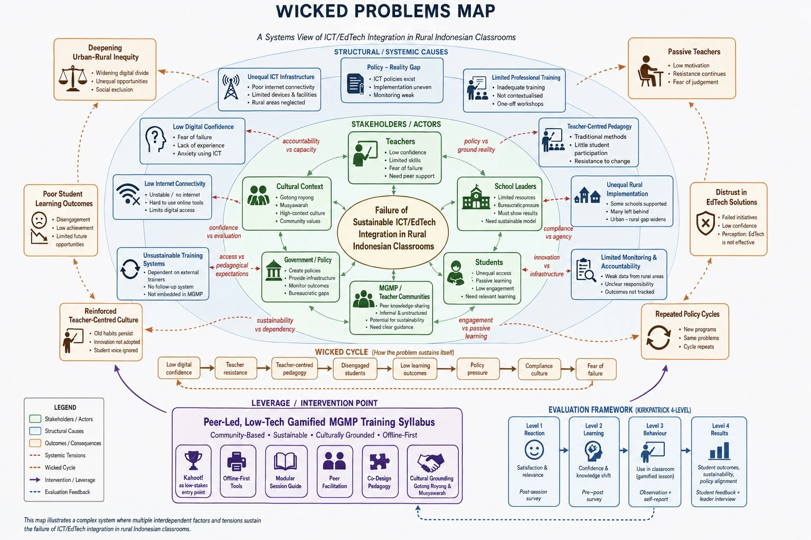
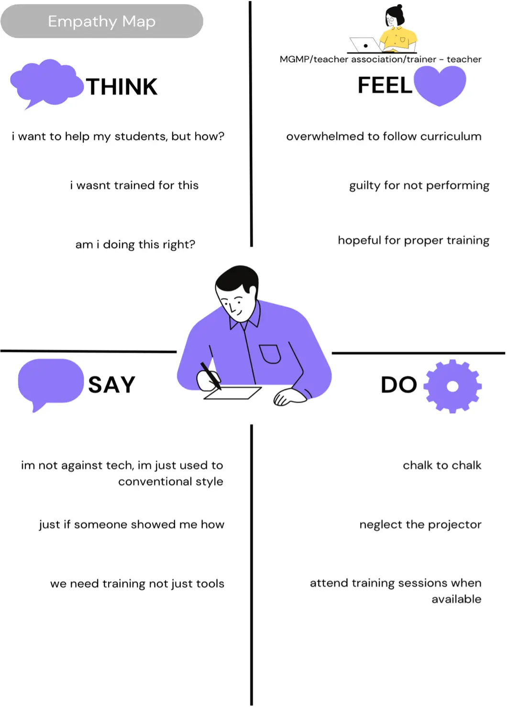
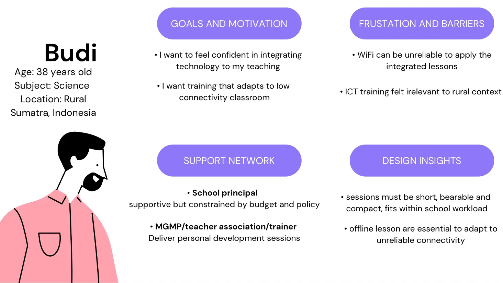
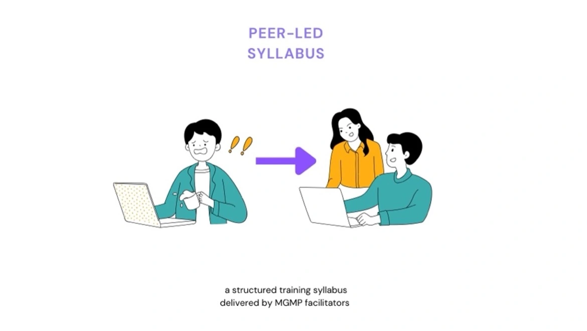
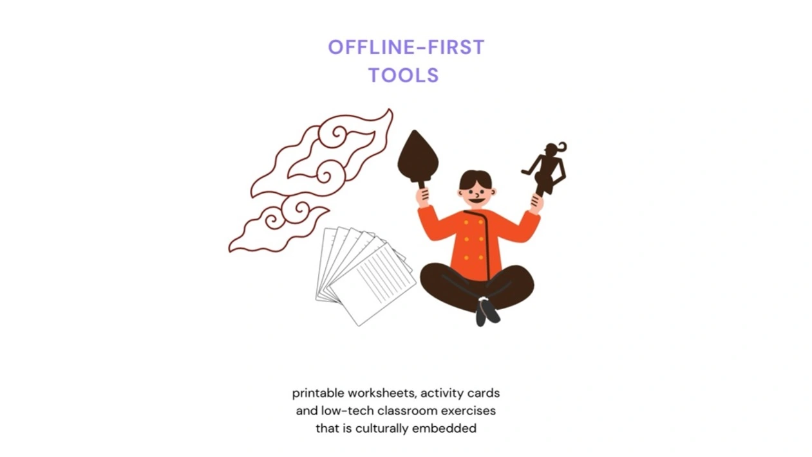
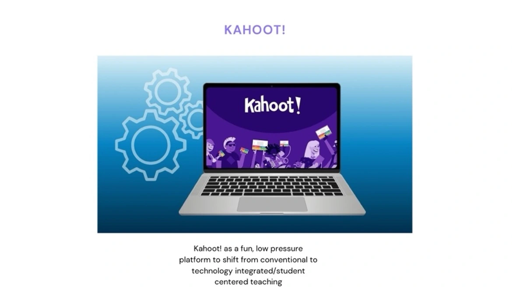
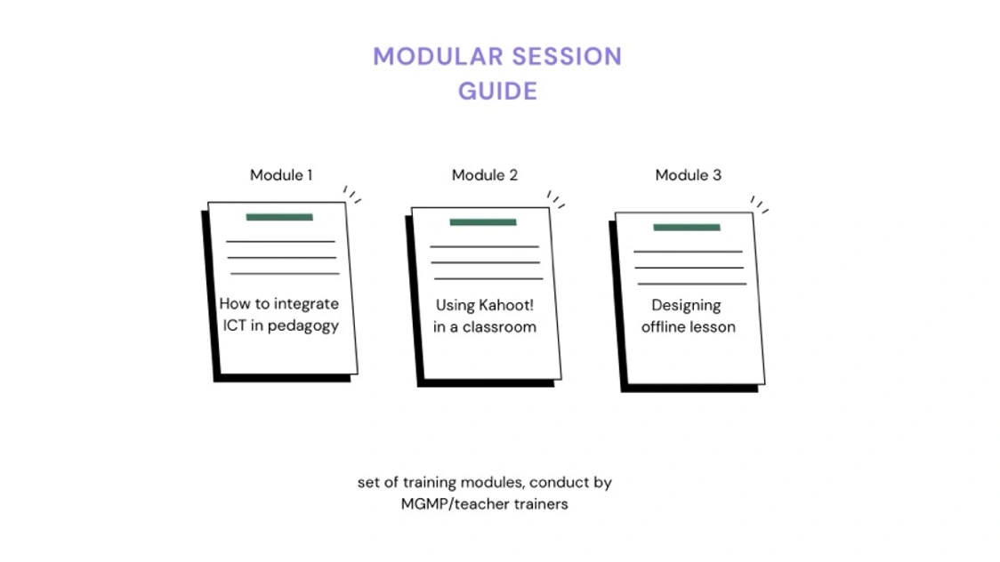

The use of ICT in Indonesian education system is not implemented equally. Specifically in rural areas, where the education and bureaucratic stakeholders are often situated in a inharmonious situation. The resistance of ICT, inadequate training added with the lack of internet and facilities from the government are all the factors that worsen the situation. This is supported by findings from Hermawan et al. (2018), which state that the use of ICT in education and management in Indonesia is still low. Although many schools in Indonesia already use ICT, especially for teaching and learning, its use is still limited.
One major reason is Indonesia's geographical diversity, as the country has many regions with different levels of ICT literacy. To overcome these challenges, the Indonesian government has introduced several policies to improve the use of ICT in education. According to the Ministry of Education and Culture's Strategic Plan (2010–2014), ICT integration became a priority through several important programs. These programs included improving ICT infrastructure and developing digital learning materials to support e-learning at all levels of education.
However, despite these efforts, the wicked cycle exists. Firstly, in reality, the government policy in ICT does not cover all ranges of rural schools, neglecting some infrastructure condition in rural areas which causes the lack of teachers capability in integrating learning in ICT. This is proven by UNICEF (2021) stating Indonesian teachers still have limited familiarity with technology. Secondly, even if some schools who have been accommodated by the proper facility, not all teachers were fully technology literate. This has a connection with teachers resistance in adopting technology integration due to their unfamiliarity and lack of training (UNICEF, 2021), which eventually caused low ICT literacy (Mirfani, 2019).
The unequal infrastructure investment clearly caused the human capacity gap which eventually led to the students. It restricts the students to use digital tools and online learning resources. By all the cause of these factors, the students remain disengaged and the outcomes stay low. The low outcomes trigger more policy pressure from government and eventually the cycle repeats.

The visualization of wicked problems tensions and gaps across stakeholders
The stakeholder overview identifies the main groups affected by unequal ICT integration in rural education and examines their influence, challenges, and roles in the co-design process. Understanding these relationships helps to understand the solution that potentially addresses the actual needs and capacities of the community.
| Type | Stakeholder | Core Challenge | Influence | Interest / Motivation | Role in Design Process |
|---|---|---|---|---|---|
| Internal Stakeholders | |||||
| Teachers | Lack of training to integrate EdTech effectively | High | High | Deliver classroom learning | |
| Students | Unequal internet and device access limits participation | Low | High | Primary learners | |
| School Leaders | Must balance innovation with limited school resources | Medium | High | Support implementation and school culture | |
| External Stakeholders | |||||
| Government | Policies often do not match rural realities or teacher readiness | High | High | Create reforms and provide infrastructure | |
| MGMP / Teacher Communities | Some teacher may not be digital literate / EdTech resistance | Medium | High | Support professional development / Prototype phase | |
Arriving from the context which requires multifaceted empathy from multiple stakeholders, the Stanford d.school's empathy stage would be valuable to gather understanding from both non-rural and rural perspective. However, Stanford d.school may lack of evaluative treatment in its stages. To address this, the implementation of Analysis, Design, Development, Implementation, and Evaluation (ADDIE) model would be implemented, specifically in Stanford's prototype stage. ADDIE is a system approach to training (SAT) with its history of digital technology in instructional design. This is much heavily related to the prototype stage as a training development syllabus. As Spector et al. (2014) suggests, ADDIE equips evaluation and revision check in every of its stages. This not only helps how the prototype works but also considering how it works according to the stakeholders, a process that Stanford d.school don't apply.
To develop a sustainable training development syllabus that focuses on ICT integrated pedagogy to addresses educational inequity in rural Indonesia by supporting low-tech, accessible, and community-driven teaching and learning experiences.
This project recognises that technology alone cannot resolve educational inequity in rural Indonesia. Instead, it aims to combine low-tech digital tools with community participation from many stakeholders to create sustainability, peer-to-peer knowledge transfer, and cultural embedding workshop. By embedding empathy, accessibility, and cultural relevance into the design process, the project positions technology as a collaborative learning support rather than a standalone solution.
The hybrid model is mainly focusing on Stanford d.school which stands on five stages in this project. It guides the overall project starting from its empathy stages which considers wicked problems putting empathy to many stakeholders, and continued with define and ideate which considers and anticipates the cultural resistance and capacity gaps and eventually step into prototype and test which will be operated in ADDIE model for knowing the output of instructional design in this project.
The ADDIE model would be specifically operated in prototype and test stage. As the instructional design would appear in a form of training development syllabus, this would takes much work and evaluation from some education stakeholders which would be vital for ensuring the pedagogic side. To address complex bureaucratic and cultural context in Indonesia, Stanford d.school would ensure a comprehensive multi-layer perspective from all stakeholders.
This first stage aims to identify hypothetical issues by understanding both practical and social problems, including emotional and cultural aspects. To gather this understanding, structured interviews are conducted.
| Stakeholder | Purpose of Interview | Sample Questions | Expected Insight |
|---|---|---|---|
| Teachers | Understand their resistance and confidence in technology | Do you use any technology in your lessons? What makes you feel unsure about using technology? What would a good professional development session look like for you? | Technology resistance, confidence gaps, training needs |
| Students | Explore how internet access affects their learning | Have you ever felt left out because of technology in class? What would make learning feel more interesting? | Disengagement, technology experience |
| School Leaders | Identify how they balance school improvement with limited resources and culture | How does the school currently support teachers who struggle with technology? What would concern you about introducing a new training program? | Resource availability, cultural readiness |
| Government | Understand how national ICT policies succeed or fail in rural school areas | How is ICT policy monitored in remote areas? Who is responsible when ICT integration fails in rural schools? | Policy-reality gap, accountability structures, systemic barriers |
| MGMP / Teacher Communities | Explore how teachers share knowledge and handle EdTech resistance | How do teachers currently share practices within your communities? What causes resistance? What role could MGMP play in sustaining a training program long-term? | Peer-to-peer knowledge transfer, sustainability, digital literacy gaps |
Based on the stakeholders reflection, the use of ICT/EdTech in teachers teaching and learning is rarely about willingness, rather, the lack of confidence and minimum training. The fact that teachers are lack of confidence rather than motivation, has direct implications for how training sessions should be sequenced and framed.
Students, particularly in areas with limited device and internet access, revealed a pattern of disengagement. Many had never used a digital learning tool in class and had been too familiar with teacher centred teaching, rather than student-centred teaching.
School leaders experienced a structural dilemma. they are expected to drive innovation but operate within limited resource (fixed budgets, infrastructure) and complex bureaucracy that rarely benefit rural conditions.
Government stakeholders, meanwhile, acknowledged oversight limitations in remote areas, suggesting accountability gaps between national ICT policy and actual implementation on the ground.
MGMP/teacher communities potentially holds the biggest chance to pivot this situation: peer-to-peer knowledge transfer already exists informally, but lacks teachers literacy and sustainability. These insights collectively confirmed the design aim: the syllabus project must be low-tech, community-driven, and capable of sustaining itself.
MGMP/teacher association/trainer — teacher

Insights: This phase reframed the wicked problem by showing that the issue was not only the lack of infrastructure or technological tools, but also the psychosocial and institutional barriers that limit meaningful ICT integration. Teachers' resistance reflected students' disengagement, creating a cycle of avoidance and poor learning outcomes that was further reinforced by policy gaps and unequal distribution of resources (UNICEF, 2021).
Empathy played an important role in understanding not only teachers' lack of confidence and limited training, but also the structural pressures experienced by school leaders, students' passive learning experiences, and the need for contextual and sustainable training for MGMP facilitators. These perspectives highlighted that technology alone cannot solve educational inequality in rural Indonesia (Mirfani, 2019).
| Stakeholder | Core Need | Challenge | Implication for Design |
|---|---|---|---|
| Teachers | Build confidence and practical skills to integrate ICT into teaching | Lack of confidence and training | Training syllabus must be grounded, peer-supported, and sequenced |
| Students | Access digital learning experiences that are engaging and relevant to their context | Unequal device and internet access | Design must account for offline-first and low-tech delivery |
| School Leaders | Drive school improvement without neglecting culture or limited resources | Limited infrastructure, fundings and complex bureaucracy | Solution must be low-cost, institutionally flexible, and easy to adopt |
| Government | Monitor and demonstrate ICT policy outcomes across all school levels including rural areas | Unequal national ICT policies | Design must offer a community-driven model that can fill the policy gap |
| MGMP / Teacher Communities | Facilitate peer-to-peer professional development in a sustainable and culturally embedded way | Informal knowledge-sharing exists but lacks structure | Training syllabus must be structured for peer-led delivery with sustainability |
Teachers avoid ICT not because of unwillingness but from lack of confidence and training
Design focus: Design training must be grounded and familiar at first, building confidence before introducing progressive method
Unequal device and internet access excludes students from digital learning
Design focus: Prioritise offline-first and low-tech tools so the learning process is not depending on connectivity
Peer-to-peer knowledge transfer exists informally within MGMP but lacks structure, making programs hard to be sustainable
Design focus: Embed sustainability mechanisms into the training syllabus so it can outlast any individual facilitator or project cycle

Rural Teacher · South Sumatra
Key traits:
Design implication: The training syllabus must start with grounded, peer-led activities that build confidence gradually, and using offline-first tools that adapt the realities and cultural aspect of rural South Sumatra classrooms.
Ideas from all three sessions will eventually be evaluated based on cultural suitability, feasibility, and their alignment with the hybrid Stanford d.school and ADDIE model.
| Stakeholder | Contribution | Design Tension Addressed |
|---|---|---|
| Teachers | Proposed short, modular training activities | Digital confidence gap |
| Students | Ideal tendency on visual learning activities that do not depend on stable internet | Access gap |
| School Leaders | Advocated for solutions that require minimal additional funding and can be integrated into existing school facilities programs | Sustainable gap |
| Government | Sought ways to document and track program outcomes through community-level structure | Sustainable gap |
| MGMP / Teacher Communities | Proposed formalising existing peer-sharing practices into structured, repeatable training modules, emphasising that facilitators need clear session guides and role for the program | Sustainable gap |
| Concept | Description | Design Potential |
|---|---|---|
| Peer-led syllabus | A structured training syllabus delivered by MGMP facilitators to fellow teachers, using session guides that require no external trainer or internet dependency | The most essential substance for prototype, anticipating and covering the digital confidence and sustainable gap |
| Offline-first tools | Printable worksheets, activity cards, and low-tech classroom exercises that is culturally embedded without requiring stable internet or devices | Addresses the access gap, ensuring the teachers can slowly shift from conventional to progressive teaching one step at a time |
| Kahoot! as a play-first entry point | Using Kahoot! in early training sessions as a fun, grounded way to introduce teachers to digital tools | Addresses the digital confidence gap, reduces fear of failure by letting teachers experience technology as a learner first |
| Modular session guide | A set of short, self-contained training modules that MGMP facilitators can run independently. Each module focuses on one practical skill | Strengthens sustainability and ensures the syllabus can be picked up by any facilitator at any time without losing continuity |




The group selected the peer-led syllabus as the most practical concept because it:
Auernhammer and Roth (2021) argue that what makes a great essential innovation management is when teachers is supported by safe environment to try, fail, and grow first rather than relying on tools the most. and that this kind of psychological freedom is what actually unlocks learning. This is exactly what the peer-led syllabus offers: a space where teachers learn alongside people they already trust, without fear of judgment.
As Stanford d.school is a design thinking that build something to test with stakeholders, ADDIE is here to enhance the prototype process to be more structured. Founding from Cano-Cruz (2026) proved the integration of ADDIE can enhance project design and execution as it provides a structured framework.
The analysis stage translated empathy findings into a clear picture of the learning environment and the gaps the syllabus must address:
Teacher readiness: Many schools in rural areas have limited or no reliable WiFi access which causes low digital confidence and resistance to EdTech (UNICEF, 2021).
Infrastructure: MGMP and teacher training meetings are held every two weeks in a designated cluster school. Internet access is often unstable, making online-dependent tools more of a challenge than a support.
Learning context: Teachers respond more positively to peer modelling than to expert-led instruction, consistent with Indonesia's cultural value of gotong royong as collective effort and mutual support (Demitra & Sarjoko, 2018).
Learning gap identified: Teachers lack both practical tool knowledge and the pedagogical framing to shift from teacher-centred to student-centred learning (Hermawan et al., 2018), meaning the syllabus must address both rather than treating them as separate problems.
Three learning objectives were designed for the 3-session workshop:
Teachers experience student-centred and ICT-integrated learning (Kahoot!) to understand the learner's (students) perspective. This not only help teachers to understand others point of view, but also expands the idea of learning that is attractive and promising (Karmina et al., 2021). By applying this approach, teachers can slowly learn a progressive method without having too much cognitive load to deepen the pedagogical continuity. Teachers are expected to learn things one step at a time through low-tech digital tool with such iteration rather than evaluation. The experience of designing a lesson with peer feedback would build teachers confidence gradually. Sarjoko and Demitra (2018) argued by situating this type of approach based on the cultural appropriateness in Indonesian context. Gillies (2007) added that the shared responsibility created within a group can increase students' sense of accountability and motivation to perform well. Individual accountability can also be encouraged through peer, group, and teacher assessments of students' contributions to the group. The findings of the current study showed that peer assessment was used to help students complete tasks, support group understanding, and improve the quality of the work. This scenario uses gamification element such as Kahoot to support the situated teaching and learning context. The limited infrastructure will decide a huge consideration of how it will run, considering challenges that needs to be adapted. Therefore, the framework proposed for this model will include Gamification framework, pedagogical framework, and Low-tech contingency framework. The selection of gamified mobile-based learning is considering on the potential of it as an accessible mobile devices rather than requiring traditional educational infrastructure. This is supported by (Gao et al., 2020) who explains the way students interact with materials can be delivered in a more engaging learning process through combination of game elements such as rewards, challenges, levels and points. The pedagogical syllabus is grounded in collaborative design as a form of professional development (Voogt et al., 2015), where teachers are positioned as co-designers of their own learning rather than passive recipients of training. This collaborative process aims to develop all three areas of TPACK simultaneously: technological, pedagogical, and content knowledge. As Bakri et al. (2021) argues, the training of teachers of professional development that involves technology, strategy and teaching needs is ideally accompanied by collaboration as the essential skill. Some sessions are designed to function without internet access. While Kahoot! is used as an online gamified platform, printed activity cards and peer game boards serve as the main learning materials. This approach is important because, in many Indonesian schools, resources such as braille textbooks, assistive technologies, and even simple audio devices are still limited (Febriana et al., 2018). The culturally relevant pedagogy proposed by Gloria Ladson-Billings (1995) suggests that students are more likely to engage and succeed when their culture is reflected in the curriculum. The program also applies cultural grounding by structuring sessions around musyawarah (collective deliberation), where decisions and designs are developed through group discussion rather than individual instruction. Indonesia's core values of gotong royong (mutual assistance) and musyawarah (collective decision-making) are closely aligned with the principles of cooperative learning (Demitra & Sarjoko, 2018). The concept of gotong royong encourages community members to share responsibilities equally in order to achieve common goals, while musyawarah means working together to reach collective agreement and shared understanding among all members of the community (Karmina et al., 2021).
Three 90-minute sessions were developed, each combining the four design aspects identified in the Design stage: gamification, pedagogical framework, low-tech contingency, and cultural grounding. These were integrated into structured, facilitated activities. Each session focused on one learning objective and one design tension.
Objective: Teachers experience student-centred, ICT-integrated learning from the learner's perspective
Teachers participate in a Kahoot! quiz as learners, not as instructors. The MGMP facilitator runs the session. This is not about testing knowledge, rather about experiencing how game elements such as points, challenges, and instant feedback can shift the situation of a classroom. Combining game elements with learning creates a more engaging process, and by experiencing this as a learner first, teachers internalise the pedagogy before they are asked to deliver it (Gao et al., 2020; Liu et al., 2020).
The session is structured around the idea that learning together, teaching, and sharing with one another is attractive and promising (Karmina et al., 2021). Teachers are not positioned as experts receiving instruction rather as co-learners.
If the internet is unstable, the Kahoot! activity can be replaced with a printed quiz board. It uses the same game mechanics, such as points, rounds, and peer competition, but does not require internet access. This ensures the session can run in all conditions and helps address access gaps in schools where resources like assistive technologies or stable connectivity are limited (Febriana et al., 2018).
The debrief at the end of Session 1 considers cultural element which is "Musyawarah" meaning putting conversation together to achieve specific purpose.
| Time | Activity | Participant Insight |
|---|---|---|
| 0–10 mins | Welcome + framing Facilitator opens the session by framing it as a play session, not a training. No assessment, no evaluation. Teachers are told: "Today you are the students." | "Finally a session where I don't have to perform. I can just try." |
| 10–35 mins | Kahoot! quiz — play as learners Facilitator runs a Kahoot! quiz on a general topic (e.g. Indonesian geography quiz). Teachers join as participants. No one is asked to host or explain anything. | "I didn't realise how nervous my students feel when the time is running. Now I understand why they freeze." |
| 35–55 mins | Guided reflection — musyawarah circle Facilitator opens a group debrief: "What did that feel like? What might your students experience?" Teachers share in a circle. | "When Pak Andi shared his experience, I realised I wasn't alone. We all felt the same pressure." |
| 55–75 mins | Introduction to gamification elements Facilitator introduces three gamification tools: point systems, challenge cards, and peer quiz formats with cultural elements. Teachers explore printed activity card samples in pairs. | "The challenge card feels simple enough. I think even I could make one for my Bahasa Indonesia class." |
| 75–90 mins | Closing + preview of Session 2 Facilitator closes: "Next session, you will design your own lesson using one of these tools." Teachers choose a partner for Session 2. | "I already know which tool I want to try. I just hope I can make it work without the internet." |
Objective: Teachers collaboratively design one lesson using a low-tech digital tool, supported by peer facilitation
Teachers work in MGMP pairs to design a lesson that includes a gamification element of their choice, such as a point system, challenge cards, or a peer quiz. The gamification element is not fixed; instead, pairs select what best suits their subject and students. This indirectly supports the development of content knowledge alongside technological knowledge, which are two domains of TPACK (Bakri et al., 2021).
A structured peer feedback form is completed at the end using sentence starters to keep feedback safe and constructive. As Karmina et al. (2021) confirm, peer assessment elevates accountability and motivation, and the evidence shows it helps teachers understand, improve, and take ownership of the task.
All co-design materials are print-based: lesson plan templates, activity card templates, and peer feedback forms. No internet connection is required at any point in this session. This is a deliberate design decision: the session must be able to function in the most under-resourced MGMP cluster school.
Pair work in this session mirrors "gotong royong" or in short shared responsibility towards specific purpose. Each teacher carries equal responsibility in the design, and the output belongs to both.
| Time | Activity | Participant Insight |
|---|---|---|
| 0–10 mins | Warm-up recap Facilitator briefly revisits Session 1: "What gamification element did you find most interesting?" Pairs confirm their chosen tool for today's design task. | "I thought about it all week. I want to try the point system, my students love competition." |
| 10–50 mins | Co-design: lesson planning in pairs Teacher pairs use a printed lesson plan template to design one 30-minute classroom lesson. They choose their own subject, topic, and gamification element. Facilitator circulates to support. | "Designing with Bu Rini made it easier. When I got stuck she had an idea, and when she got stuck I helped her." |
| 50–70 mins | Peer gallery share Each pair presents their lesson plan to another pair. Listeners complete a printed peer feedback form using sentence starters. | "The sentence starters helped. I didn't want to say something wrong so having the template made me feel safer giving feedback." |
| 70–85 mins | Revise and refine Pairs use the feedback received to revise their lesson plan. Small changes only — the goal is improvement, not a complete redesign. | "One suggestion from the other pair changed how I sequenced the activity. It actually made more sense." |
| 85–90 mins | Closing + preview of Session 3 Facilitator closes: "Next session, you will trial this lesson with your peers as the students." Teachers keep their lesson plan to review before Session 3. | "I'm a little nervous but I feel like this lesson is actually mine. I made it. I want to see if it works." |
Objective: Teachers trial their co-designed lesson with peer observers, building confidence through iteration
Teachers trial their co-designed gamified lesson with peer observers from within the MGMP group acting as "students." The gamification element developed in Session 2 is tested in a safe, low-stakes environment, while the facilitator can observe without having intervention.
A structured reflection form guides the post-trial discussion, focusing on what worked, what was surprising, and what could be improved. This reflective practice supports the development of all three TPACK domains simultaneously. The session concludes with each teacher leaving with a complete lesson plan.
The trial lesson is conducted using only the materials developed in Session 2, all of which are print-based. The modular session guide is also finalised in this session and handed to the MGMP coordinator, ensuring that future rotation can be run by any facilitator within the cluster without external support.
The closing reflection is facilitated as a group. Each pair shares one thing they are proud of and one thing they would improve. This collective acknowledgment of effort mirrors gotong royong: the shared responsibility that a group creates elevates the feeling of accountability and motivation to perform well.
| Time | Activity | Participant Insight |
|---|---|---|
| 0–10 mins | Warm-up + setup Pairs review their revised lesson plan. Facilitator sets the scene: "We are a classroom. You are the teacher. We are your students." Observers receive a printed observation form. | "My hands were shaking a little. But then I remembered, these are just my colleagues. They want me to succeed." |
| 10–50 mins | Lesson trial peer teaching Each pair delivers a 10-minute excerpt of their co-designed lesson. Peer observers complete the observation form. After each pair, 5 minutes of quiet written reflection before verbal feedback. | "When they laughed at the quiz question I made, I felt proud. That's the first time I've felt proud in a training." |
| 50–70 mins | Structured group debrief Whole group shares: "What worked? What surprised you? What would you change?" Facilitator documents key responses on a shared flip chart visible to all. | "Seeing all our answers on the flip chart made me realise we had all learned something different. That's never happened in a training before." |
| 70–82 mins | Final lesson plan + modular guide handover Teachers finalise their lesson plan. Facilitator hands the completed modular session guide to the MGMP coordinator for future use. | "I didn't know we would leave with something finished. I'm going to use this on Monday." |
| 82–90 mins | Closing celebration: gotong royong acknowledgment Each pair shares one thing they are proud of. Facilitator closes: "You designed this together. You taught this together. This lesson belongs to you." | "I came in thinking I couldn't do this. I'm leaving thinking maybe I can." |
Sessions run within existing fortnightly MGMP meetings. No new infrastructure needed. Attendance is voluntary but encouraged through peer recognition and practical outcomes.
As there is no exact systematic methods of Stanford test stage, the ADDIE evaluation stage would evaluate the project through formative and summative approach. To make it more systematic and comprehensive, the method used in this test phase would be enhanced with Kirkpatrick's 4 level evaluation model, one of the most common and widely used in education sector. The 4 level that consists of: reaction, learning, behaviour and results would precisely measure the digital confidence gap, access gap, and sustainable gap in this project.
This is supported by Praslova (2010) that stated this model as a method that can understand rich context of the places and roles from its 4 specific indicators, allowing feedbacks and effectiveness as a needs of organizational change and adjustment.
Did teachers find the sessions relevant, engaging, and well-facilitated? Method: post-workshop satisfaction survey (5-minute, Likert scale). Target: willingness to try gamification in class.
Did teacher knowledge and confidence shift after the 3 sessions? Method: pre/post survey: same 10 questions on confidence and attitude toward EdTech. Target: measurable shift in at least 60% of participants.
Did teachers actually apply gamification in their classrooms after the workshop? Method: classroom observation checklist + brief teacher self-report. Target: at least one gamified activity used in class.
Did the intervention produce meaningful change at the school and student level? Student feedback, school leader interview, and policy officer brief to assess scalability.
| No. | Statement | PRE (Before Session 1) | POST (After Session 3) | Section |
|---|---|---|---|---|
| 1 | I feel confident using digital tools (e.g. Kahoot!, quiz apps) in my classroom. | 1 2 3 4 5 | 1 2 3 4 5 | Confidence |
| 2 | I feel prepared to design a student-centred lesson using technology. | 1 2 3 4 5 | 1 2 3 4 5 | Confidence |
| 3 | I am comfortable trying new digital tools even if something goes wrong. | 1 2 3 4 5 | 1 2 3 4 5 | Confidence |
| 4 | I believe technology can improve my students' learning experience. | 1 2 3 4 5 | 1 2 3 4 5 | Attitude |
| 5 | I am willing to change my teaching approach to include more student participation. | 1 2 3 4 5 | 1 2 3 4 5 | Attitude |
| 6 | I find peer-led professional development more useful than expert-led training. | 1 2 3 4 5 | 1 2 3 4 5 | Attitude |
| 7 | I am aware of at least one gamification tool I could use in my classroom. | 1 2 3 4 5 | 1 2 3 4 5 | Tool Knowledge |
| 8 | I know how to design a lesson that uses game elements (points, challenges, peer quizzes). | 1 2 3 4 5 | 1 2 3 4 5 | Tool Knowledge |
| 9 | I feel supported by my MGMP community to try new teaching approaches. | 1 2 3 4 5 | 1 2 3 4 5 | Support |
| 10 | I believe a peer-led training program can help me develop my ICT skills. | 1 2 3 4 5 | 1 2 3 4 5 | Support |
| Area | Observation Item | Yes / No | Notes |
|---|---|---|---|
| Gamification | Teacher used at least one gamification element (point system, challenge card, peer quiz, or Kahoot!) | ||
| Gamification | Students were actively participating in the gamified activity | ||
| Student-centred | Students worked in pairs or groups during the lesson | ||
| Co-designed lesson | The gamification element in the lesson was selected by the teacher (not prescribed) | ||
| Low-tech | The lesson ran without needing stable internet (offline or print-based materials used) | ||
| Reflection | Teacher appeared confident during delivery (observer judgement) |
Facilitator name: ________________________ Teacher observed: ________________________
Overall impression: Strong evidence of transfer / Some evidence / Little evidence / No evidence
| No. | Pertanyaan / Question | Jawaban / Answer |
|---|---|---|
| 1 | Apakah pelajaran hari ini terasa berbeda dari biasanya? (Did today's lesson feel different from usual?) | Ya / Tidak (Yes / No) |
| 2 | Apakah kamu merasa lebih ikut terlibat dalam pelajaran hari ini? (Did you feel more involved in today's lesson?) | Ya / Tidak (Yes / No) |
| 3 | Apakah kamu ingin pelajaran seperti ini lagi? (Would you like more lessons like this?) | Ya / Tidak (Yes / No) |
Nama kelas / Class: ________________________ Kamu tidak perlu menulis namamu. / You do not need to write your name.
| Kirkpatrick Level | What We Measure | How | Success Indicator | Timing |
|---|---|---|---|---|
| Level 1 — Reaction | Teachers' immediate response to each session: relevance, usefulness of gamification, willingness to try | Paper-based Likert scale survey (1–5), administered immediately after each session | At least 70% rate safety and relevance as 4 or above | After each session |
| Level 2 — Learning | Shift in teacher confidence, attitude toward EdTech, and ability to design a student-centred lesson | Pre/post survey — 10 identical questions given before Session 1 and after Session 3 | Measurable positive shift in at least 60% of participants | Before Session 1 and after Session 3 |
| Level 3 — Behaviour | Whether teachers applied gamification or student-centred methods in their actual classroom after the workshop | MGMP facilitator classroom observation checklist + teacher self-report form | At least half of participants used one gamified activity within 2–4 weeks | 2–4 weeks after Session 3 |
| Level 4 — Results | Student experience of gamified lessons; school leader willingness for second cycle; MGMP sustainability; policy alignment | 3-question student feedback form; school leader interview; MGMP coordinator review; policy officer brief | Positive student feedback; school leader supports second cycle; MGMP guide ready for independent use | End of Month 3 |
Artefact A16 · Project Timeline
| Phase | Month 1 | Month 2 | Month 3 | Month 4 | Month 5 | Month 6 |
|---|---|---|---|---|---|---|
| Empathise / Discover Stanford d.school | ||||||
| Define / Synthesis Stanford d.school | ||||||
| Ideate Stanford d.school | ||||||
| Prototype / Develop Stanford + ADDIE | ||||||
| Test / Deliver Stanford + ADDIE | ||||||
| Peer Dissemination Extension Phase |
Every stakeholders in this project have their own meaningful gap, tension and contribution in designing the project which every stakeholders are co-designers rather than passive participants:
Each of these uneasiness created a productive decision with no hierarchy, rather, all primary actor of the design.
| Stakeholder + Input | Design Decision |
|---|---|
| Rural teacher: lack of confidence and fear of trying | Removes all performance pressure from first contact with gamification |
| School principal: concern about limited resources and school facilities | Embedded syllabus within contextual MGMP trainers and teachers needs |
| MGMP coordinator: noted that teachers trust peer modelling more than external expert training | From instructor to guide; Session 2 and 3 are entirely teacher-led |
| Student representative: reported that current lessons feel repetitive and passive | Added student engagement feedback form in Test phase, ensuring the student voices are heard |
| District education officer: wants measurable outcomes for reporting | Added Kirkpatrick Level 4 evaluation and a one-page summary output for policy reporting |
Accountability vs capacity: teachers are evaluated on ICT use but not trained for it. Resolution: the workshop addresses capability before compliance.
Principal compliance vs teacher agency: principals want visible results; teachers want safe spaces. Resolution: voluntary participation with peer recognition, not top-down mandate.
The most significant learning from stakeholder engagement was not about tools or infrastructure, it was about confidence and cultural safety. The early assumption was that teachers' resistance to EdTech was primarily a skills problem. Engagement revealed it was primarily a psychological one: teachers feared looking incompetent in front of students and colleagues. In this context, tools is a vehicle, not a destination.
First, the most essential element of the design lies in its cultural alignment. The workshop that are lead with peer-led supports taken from MGMP/teacher communities structures resembles Indonesian cultural values; gotong royong & musyawarah, overcoming the digital confidence and sustainable gap in the system. This grounded approach fits perfectly with the low contingency of the design, making it genuinely approachable and accessible for the rural teachers (Maryani et al., 2025). Beyond accessibility, the model is designed for scalability. Trained teachers are encouraged to share their learning with other schools in the range of MGMP cluster, allowing the intervention to continue (Voogt et al., 2015).
Although this project operates in a low-tech facilities, the workshop still ensure the TPACK element which includes technological, pedagogical and content knowledge is integrated in the practice without abandoning or eliminating any of the elements. Finally, the Kirkpatrick four-level evaluation framework provides a comprehensive and measurable evaluation stage for assessing the design.
Despite the strengths, the design carries several limitations. The most significant is ineffective student centred approach. There is no guarantee that Kahoot! or game-based activities produce deep pedagogical shift rather than surface-level student-centred teaching. It will all depending on how the teachers internalized the practice from the training syllabus. From the infrastructure aspect, even if it operates in a low-tech contingency, there is no guarantee that the plan would reach its ideal state, considering Kahoot! still only be able to operate with the help of internet connectivity. Most importantly, the sustainability of the program beyond Month 3 can turn uncertain. Without a clear succession plan, the MGMP coordinator's plan to sustain itself can be questionable, knowing that the plan can only reach around expected time.
This project's main problem is circulated around the teachers use of digital tools. After engaging with stakeholders, it became clear the real barrier was confidence not skill. That changed everything about how the sessions were designed, and how the rest of the syllabus works. The wicked cycle circulates not because of having problems, rather, the neglection of connectedness of each stakeholders that creates everlasting tension between it.
Acknowledgment of AI: I declared the use of Claude (claude.ai) to improve my writings and grammar, illustrate my wicked problems map and time table and identify potential ideas and concepts relevant to some of the stages. The outputs produced by Claude were re-evaluated, ensuring the originality of my ideas.